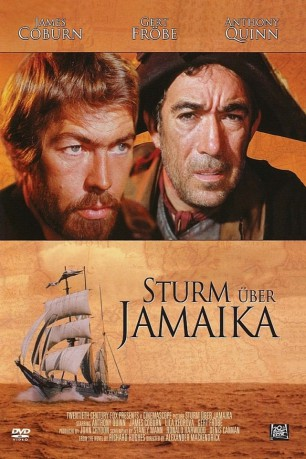
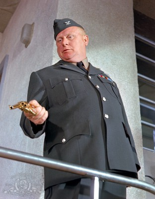

#11137 Sturm über Jamaika
Alternativ: A High Wind in Jamaica (Englischer Titel)
 
 IMDB-Wertung: 6.8 / 10
IMDB-Wertung: 6.8 / 10  Metascore: 0
Metascore: 0 
Nach der Romanvorlage von Richard Hughes. Die Thorntons, eine britische Familie, die in Jamaika lebt, wollen in ihre Heimat zurückkehren, da das Leben in der Karibik einen schlechten Einfluss auf die Kinder hat. Mit dem Schiff machen sie sich auf die Reise zurück nach England. Auf der Suche nach Kostbarkeiten durchkreuzen Kapitän Chavez und Zac die Meere und treffen auf das Schiff der Thorntons. Während des Angriffs schleichen sich die Kinder unbemerkt auf das Schiff der Piraten. Es dauert nicht lang, da entdecken die Piraten auch schon ihre blinden Passagiere. Doch während die übrige Piratencrew davon nicht begeistert ist, entscheidet Chavez, dass sie an Bord bleiben dürfen, bis sie einen sicheren Hafen anlaufen. Auf der langen Reise lernen sie sich besser kennen und Chavez entwickelt ein Faible für die Kinder. Besonders die 10jährge Emily hat es ihm angetan. Unbedarft ahmen die Kinder in ihren spielen die Piraten nach und entwickeln dabei mehr und mehr eine eigene Boshaftigkeit.
Jahr: 1965
Dauer: 102 Minuten
FSK: 16
Land: England Studio: Carol Media HomeTonspuren:
Untertitel:
Auflösung: 1080p (1920x816) Größe: 7833 MB
Genre: Drama, Abenteuer
Regisseur: Alexander Mackendrick
Drehbuch: Stanley Mann, Ronald Harwood, Denis Cannan, Richard Hughes
Soundtrack: Larry Adler
Darsteller:
 Anthony Quinn als Chavez
Anthony Quinn als Chavez James Coburn als Zac
James Coburn als Zac- Dennis Price als Mathias
- Lila Kedrova als Rosa
 Nigel Davenport als Frederick Thornton
Nigel Davenport als Frederick Thornton- Isabel Dean als Alice Thornton
- Ben Carruthers als Alberto
-  Gert Fröbe als Dutch Captain
- Trader Faulkner als Pirate
- Viviane Ventura als Margaret Fernandez
- Deborah Baxter als Emily Thornton
- Roberta Tovey als Rachel Thornton
- Philip Madoc als Guardia Civile
- Kenneth J. Warren als Capt. Marpole
- Brian Phelan als Curtis
- Charles Laurence als Tallyman
- Charles Hyatt als Pirate
- Dan Jackson als Pirate
- Kenji Takaki als Cook
- Martin Amis als John Thornton
- Jeffrey Chandler als Edward Thornton
- Karen Flack als Laura Thornton
- Henry Beltran als Harry Fernandez
- Elsie Benjamin Barsoe als Nurse (uncredited)
- Louise Bennett als Mamie (uncredited)
- Maude Fuller als Josephina (uncredited)
- Gordon Richardson als Judge (uncredited)
- Marion Ward als Mrs. Fernandez (uncredited)
- Danny Williams als Old Sam (uncredited)
- Ranny Williams als Actor (uncredited)
Datei: X:\1965\Sturm über Jamaika (1965, FSK16, 1920x816).mkv seit 25.04.2019
Festplatte: Gemischt-01+Anime
 Es gibt insgesamt 25 Filme in der Gruppe '1965'
Es gibt insgesamt 25 Filme in der Gruppe '1965'